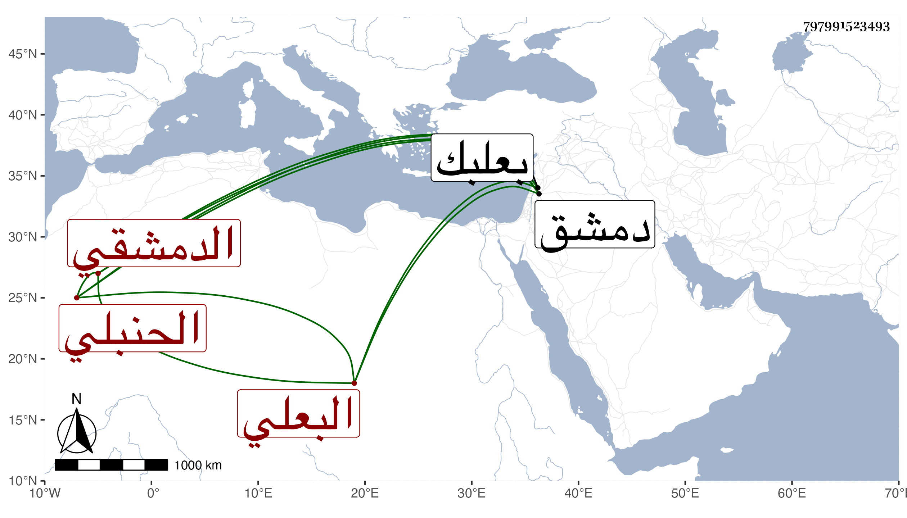

0902Sakhawi.DawLamic.ITO20230111-ara1.EIS1600.797991523493
Biography ID: 797991523493
493
حسن بن محمد بن محمد بن أبي الفتح بن أبي الفضل البدر بن البهاء بن العلامة الشمس البعلي ثم الدمشقي الحنبلي سبط عبد القادر بن القرشية ولذا يعرف أيضا بابن القرشية . ولد سنة اثنتين وثلاثين وسبعمائة وسمع من جده عبد القادر وعبد الرحيم بن أبي اليسر وزينب ابنة الكمال والشهاب الجزري ، وحدث سمع منه شيخنا وغيره ، وقال في معجمه إنه مات وهو متوجه إلى بعلبك في شعبان أو رمضان سنة ثلاث بعد انفصال العدو عن دمشق ، وجزم في إنبائه بشعبان ، وتبعه في التردد المقريزي في عقوده .
